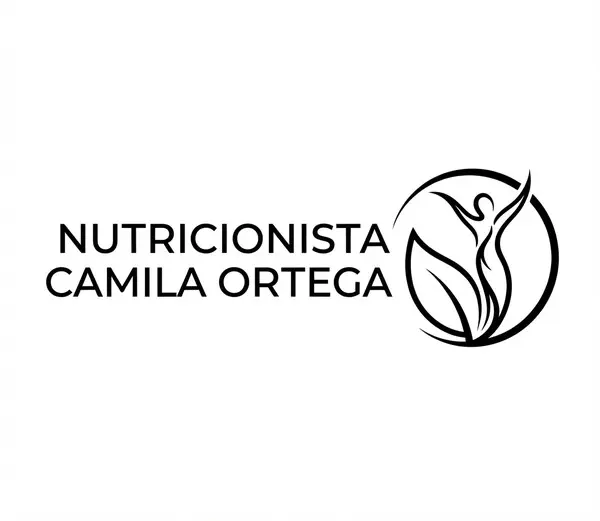

Alimentos que hinchan y deshinchan
Camila explica qué alimentos suelen causar sensación de hinchazón y cuáles pueden ayudarte a sentirte más liviano.

Dos formas de comenzar tu proceso. Escríbeme para conocer disponibilidad y coordinar tu primera hora.
Consulta individual en box equipado, con evaluación antropométrica y seguimiento personalizado.
Atiendo en Centro Médico Dr. Miranda, Av. Grecia 5843, Santiago.
Atenciones por previsión médica (FONASA).
Consultar disponibilidad →Videollamada desde cualquier parte de Chile, con material de apoyo y seguimiento por escrito entre sesiones. Requiere completar un formulario previo.
Vía videollamada
Consultar disponibilidad →Soy nutricionista titulada, con formación en nutrición clínica y un enfoque centrado en cambios de hábitos sostenibles más que en soluciones rápidas. Trabajo con adultos y adultos mayores en el manejo nutricional de condiciones como diabetes, hipertensión, dislipidemias y trastornos digestivos, además de procesos de composición corporal.
Creo en la educación alimentaria por sobre la restricción: cada plan se ajusta a la rutina, los gustos y el presupuesto de cada persona.
Artículos con base clínica sobre temas frecuentes en consulta, para entender mejor cada condición y qué cambia en el día a día.
Videos cortos de Camila para que entiendas mejor tu alimentación y tu salud.
Camila explica qué alimentos suelen causar sensación de hinchazón y cuáles pueden ayudarte a sentirte más liviano.
Una mirada profesional sobre cómo entender la alimentación y la dieta en tu día a día.
Información clara sobre qué es la obesidad y por qué conviene abordarla con acompañamiento profesional.
Un cálculo orientativo para entender mejor tu punto de partida. No reemplaza una evaluación profesional personalizada.
IMC
—
Escríbeme por WhatsApp para coordinar tu hora, o completa el formulario si prefieres partir por telemedicina.
Escríbeme por WhatsApp📍 Centro Médico Dr. Miranda, Av. Grecia 5843, Santiago
Atenciones presenciales por previsión médica (FONASA)